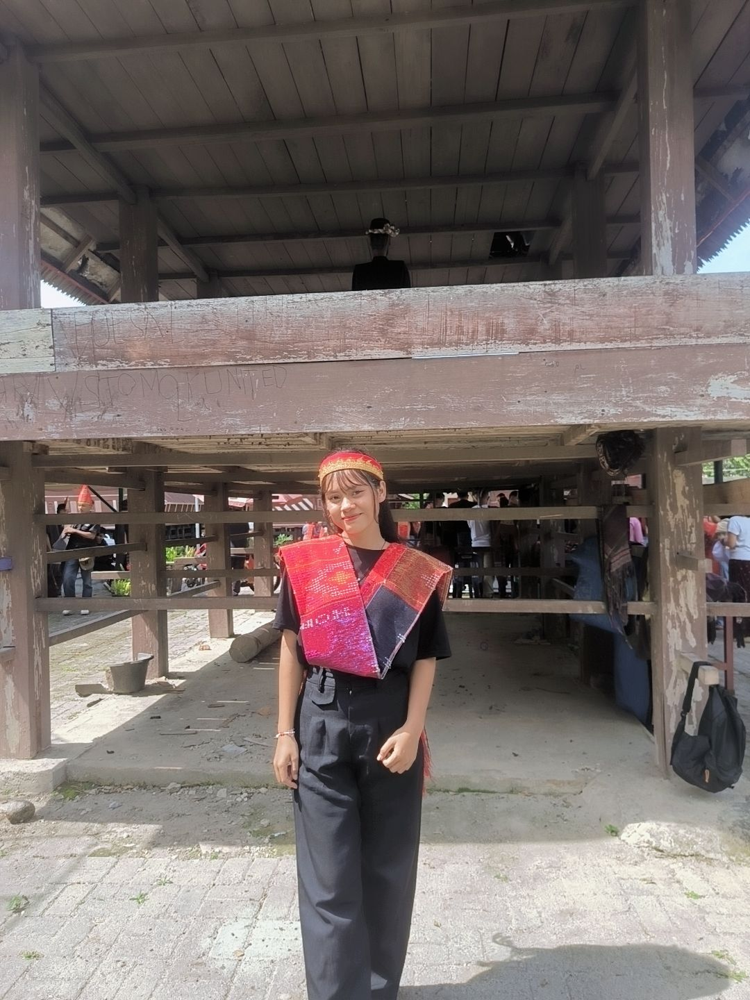

♡ ✧
✨ ♡
✧
HALO, SELAMAT DATANG! ✨
Cristin Paulina Simanjuntak
Mahasiswa yang sedang belajar teknologi.
Saya adalah mahasiswi Politeknik Wilmar Bisnis Indonesia dari Program Studi Teknologi Rekayasa Perangkat Lunak (TRPL). Di sini saya ingin berbagi tentang diri saya, mulai dari biodata, pendidikan, hobi, keahlian, hingga cita-cita saya.
♥
